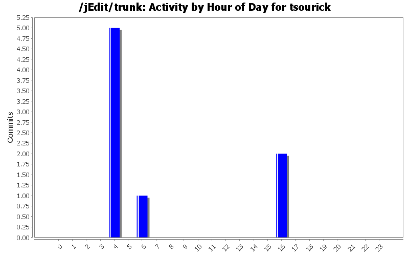
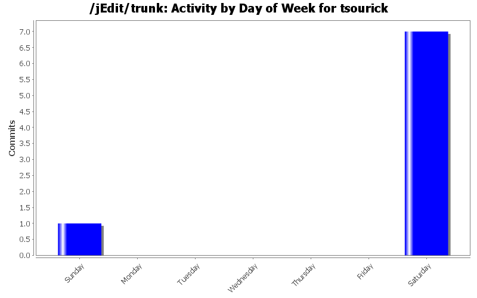
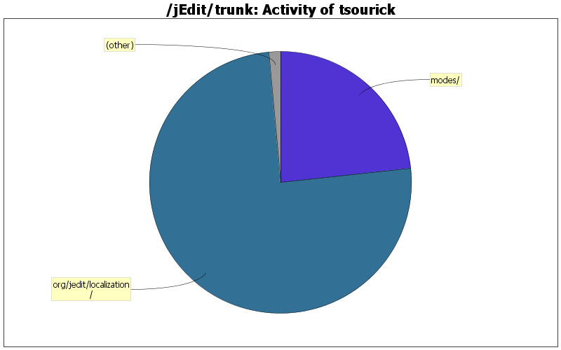

| Directory | Changes | Lines of Code | Lines per Change |
|---|---|---|---|
| Totals | 8 (100.0%) | 1041 (100.0%) | 130.1 |
| org/jedit/localization/ | 1 (12.5%) | 784 (75.3%) | 784.0 |
| modes/ | 5 (62.5%) | 242 (23.2%) | 48.4 |
| doc/ | 2 (25.0%) | 15 (1.4%) | 7.5 |

Russian language update
786 lines of code changed in 2 files:
a bunch of changes
13 lines of code changed in 1 file:
Patch #611, fix #3249: assembler-x86 comment directive
6 lines of code changed in 1 file:
Patch #610, fix #4054: hash comment highlighting in mysql mode
3 lines of code changed in 1 file:
Patch #609, fix #2194: ASP Syntax highlight bug w/comment
37 lines of code changed in 1 file:
Patch 608, fix 2106: PHP mode "//" comment syntax highlighting is incorrect
1 lines of code changed in 1 file:
Patch #613: javascript mode update (up to ES 2017)
195 lines of code changed in 1 file: